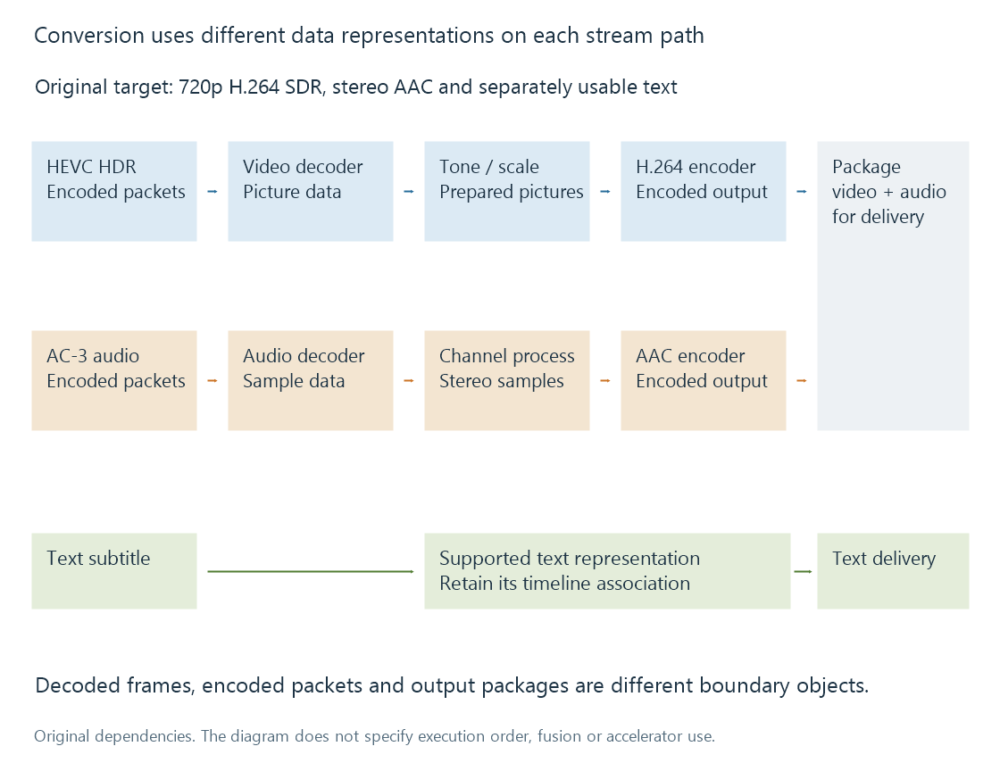

How a transcoding pipeline works
A transcoding pipeline connects resource access, selected stream processing, timestamp handling and output packaging so that a new media representation can be delivered.
A transcoding pipeline connects operations that use different kinds of data. The input is a stored or incoming media resource. Some stages handle compressed packets; others need reconstructed pictures or audio samples. The output is encoded media packaged for a playback path.
Understanding those boundaries explains both what a conversion changes and where its time or memory cost can arise.
A concrete conversion plan
Take an original fictional 108-minute source with 4K HEVC HDR video, six-channel AC-3 audio and a text subtitle. The chosen target is 1280 × 720 H.264 SDR, stereo AAC and separately usable subtitle text.
The plan contains three different stream paths:

The diagram describes dependencies. Emby may schedule, fuse or accelerate operations differently.
The video needs a new picture presentation and encoding. The audio needs a new channel/codec presentation. The text does not need to become video pixels in this plan. If the target instead requires subtitle burn-in, those pixels become another input to picture processing.
From resource bytes to selected packets
The resource reader obtains input bytes. A demuxer interprets the container and exposes its streams and packet timing. Selection decides which streams contribute to the output.
This matters when several audio tracks or subtitle types are present. Decoding the wrong audio track successfully still produces the wrong programme. A correct pipeline starts with the intended resource and track identities.
The demuxer can also provide format information, chapters and codec configuration. Those descriptions help initialise downstream stages. They are not the decoded pictures themselves.
| Boundary | Data at that point |
|---|---|
| Resource access | Container or incoming delivery bytes |
| Demuxed video/audio | Encoded packets and associated timing/configuration |
| Decoder output | Reconstructed video pictures or audio samples |
| Picture/audio filters | Frames in the formats those filters require |
| Encoder output | A newly encoded stream representation |
| Muxer/packager output | Bytes organised for the delivery resource |
A compatible stream-copy branch can bypass reconstruction and encoding. It still needs valid selection, timing and output packaging.
Reconstruct before changing pictures or samples
A decoder interprets compressed data. It can need reference pictures, codec configuration and enough input before it produces a usable output frame.
Picture filters then operate on a suitable decoded representation. For the example, colour/range conversion and scaling prepare the SDR 720p pictures. Their exact algorithms are separate subjects; the important pipeline fact is that their inputs and outputs are picture data.
Audio takes another branch. A decoder supplies samples; channel processing prepares the stereo presentation; the audio encoder produces AAC. Video and audio therefore can have different costs and buffering while sharing one output timeline.
The separately delivered text keeps its timing association. It does not pass through the video encoder merely because the video is being transcoded.
Decoded data changes the memory scale
A compressed stream at 35 Mbit/s represents about 4.375 MB/s in decimal units. Its decoded picture data can be far larger.
Assume an ideal unpadded 3840 × 2160, 4:2:0 picture stored in 16-bit containers per sample:
3840 × 2160 × 1.5 samples per pixel × 2 bytes per sample
= 24,883,200 bytes per picture
At 24 pictures per second, that layout represents 597,196,800 bytes per second of picture buffers. Five such buffers occupy 124,416,000 bytes.
These are layout calculations, not measured Emby memory use. Actual surfaces can use other layouts, alignment, compression or memory domains. A processing step can also require an intermediate representation different from the decoder's output.
The calculation explains why transfers between processing stages can matter even when the encoded bitrate seems small. A hardware decoder and hardware encoder do not automatically eliminate every movement of picture data between them.
Encode the prepared representation
The video encoder receives the prepared pictures and creates a stream meeting the target configuration. The output resolution, cadence, colour interpretation and rate-control choices describe this new representation.
The audio encoder does the corresponding job for its prepared samples. A muxer can then interleave the encoded outputs, retain needed configuration and write the chosen container or delivery package.
An encoder does not normally produce a complete MP4 merely because it produces H.264 packets. The packaging stage supplies the container structures. Likewise, a successful mux cannot rescue an upstream branch that never produced valid data.
Preserve a timeline across the stages
Each stage needs to retain or deliberately transform presentation timing. Audio and video clocks must refer to the intended programme moments, even if their packet cadence differs.
Suppose playback is requested from programme minute 10. An original simplified delivery model can start its new output clock at zero while retaining an association with source second 600:
programme time = output time + 600 seconds
Output second 12 then represents programme second 612. Copying an unqualified output timestamp into a user resume record would lose that association.
Another path may retain source-origin timestamps instead. The example explains why the mapping matters; it does not specify every Emby timestamp policy. Seeking develops the access-point and timing dependencies.
The first picture and sustained throughput are different results
Before output can be used, resource access, parsing, decoder initialisation and any needed reference data must be available. Filters and encoders can introduce additional startup buffering. The output path then needs enough usable packaged data for the player.
After startup, stages may overlap. One stage can decode later pictures while another encodes earlier ones. That can improve steady throughput without making the first frame's entire dependency chain disappear.
A pipeline can therefore have noticeable startup delay and then run faster than real time. It can also start quickly but lose ground during difficult portions. Real-time capacity and startup delay describe those different observations.
See Also
- Decoding media streams
- Encoding a new media representation
- Media filter graphs
- Stream copying and encoded packet handling
- Transcoding bottlenecks
- Transcode temporary files and generated output
- Seeking during streaming